【配信のお知らせ】○月○日（○）20:00から、イラストメイキング配信をします。ぜひ見に来てください！
教材・授業・AIで学ぶ
毎日のライブ授業・質問対応と、24時間AI
就労支援事業所のための学習・実践プログラム
利用者の方の「やってみたい」を、
事業所の新しい力に。
楽しくて、やりがいがあった
やってみよう！
パソコンが苦手だったけど、できることが増えた
利用者さんの表情が明るくなった
01ABOUTエスピクトスクールとは
就労支援事業所に、デジタルの学習環境と実際の仕事を届けるサービスです。
毎日のライブ授業・質問対応と、24時間AI
案件の提供から、品質確認・納品まで支援
利用者の方の「できる」を増やし、生産活動収入アップ・工賃向上へ。
身につけた力を、誰かの役に立つ仕事へ。 取り組める仕事を見る
MOVIEサービス紹介動画
学ぶ環境から、仕事の取り組み方まで。
音声あり・テロップ入り
毎日授業があるので、日中の過ごし方を組みやすい
02CASE事業所での活用イメージ
教える体制、仕事の選択肢、在宅での活動。
事業所の状況に合わせた、3つのモデルケースです。
3つのケースを、選んで切り替えられます
こんな課題、ありませんか？
パソコンもソフトもある。でも、次に何を教えればよいか分からない。
エスピクトスクールで
教材で学び、実演で確かめ、疑問はAIへ。教える役割が、一人に偏らない学び方を用意します。
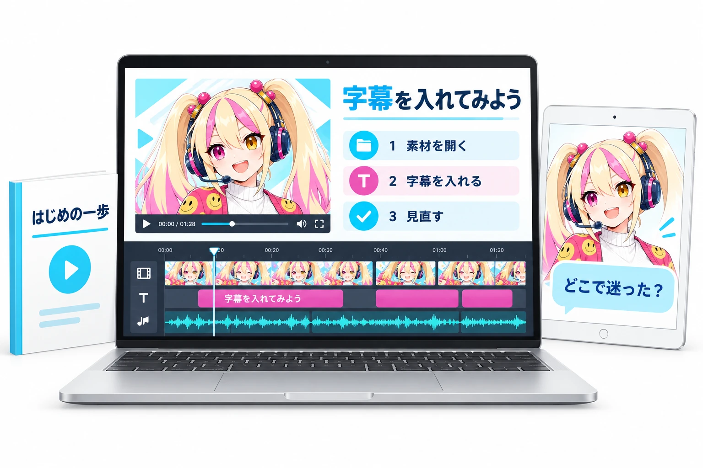
日々の支援に目を向けられる
学びと記録の仕組みを見るこんな課題、ありませんか？
受注先を探すことも、初心者への指導や納品の判断も、事業所だけでは難しい。
エスピクトスクールで
教材で学びながら、担当できる作業へ。提供案件は品質確認・納品まで支えます。
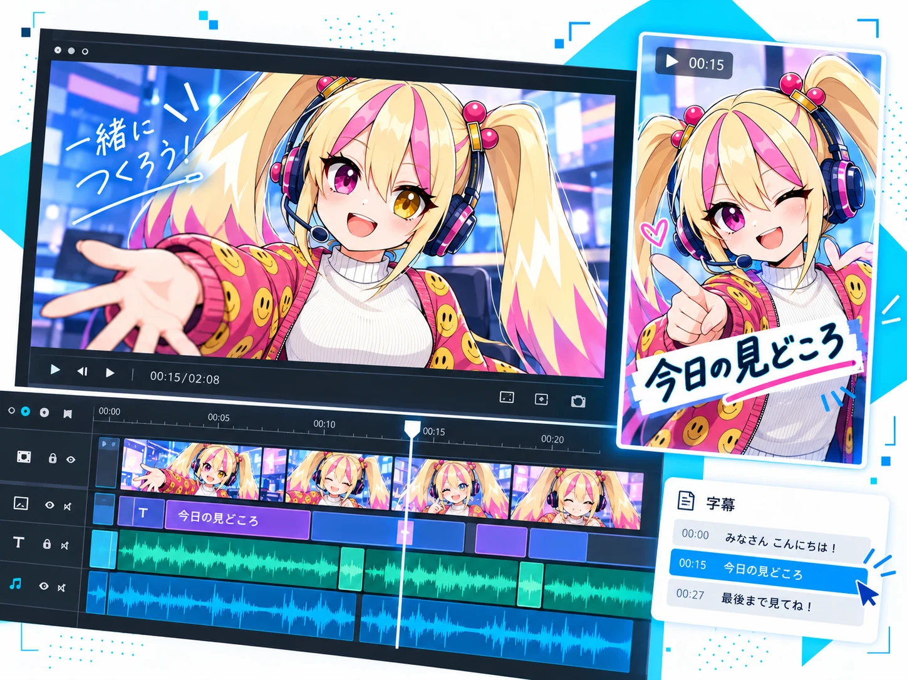
受注先探しから納品まで、事業所だけで抱えない
案件の進め方を見るこんな課題、ありませんか？
家で取り組める活動や、進み具合を確かめる方法がない。
エスピクトスクールで
教材やAIを自宅から利用。取り組みを記録し、何を進めたかを確かめられます。
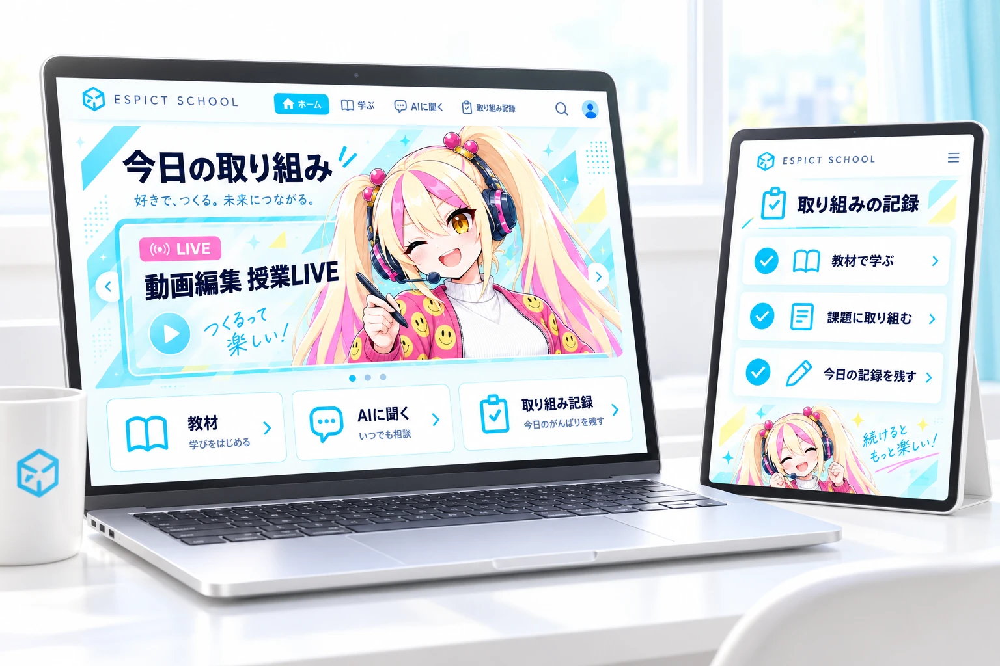
通所が難しい日の、活動の選択肢に
在宅利用には自治体の判断や事業所の支援体制などの要件があります。
取り組みの記録を見る同じ操作の質問が重なり、職員の方の手が止まる
一人ひとりで進み方が違い、一斉には教えにくい
何に取り組んだか、あとから振り返りにくい
上記は活用方法を説明するモデルケースで、実在の事業所の証言・成果実績ではありません。
わからない時にすぐ聞けるから、ひとりで止まらない
03APPエスピクトスクール専用アプリ
利用者の方には、自分のペースで学び進める環境を。
職員の方には、日々の取り組みを確かめられる環境を。
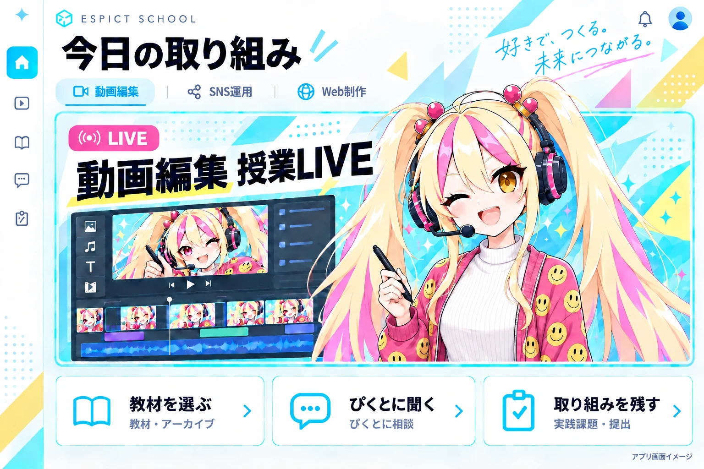
01教材とライブ授業
毎日ライブ配信で授業と質問対応を提供。専用アプリから参加し、講師の実演を見ながら学べます。見逃した授業はアーカイブで確認できます。
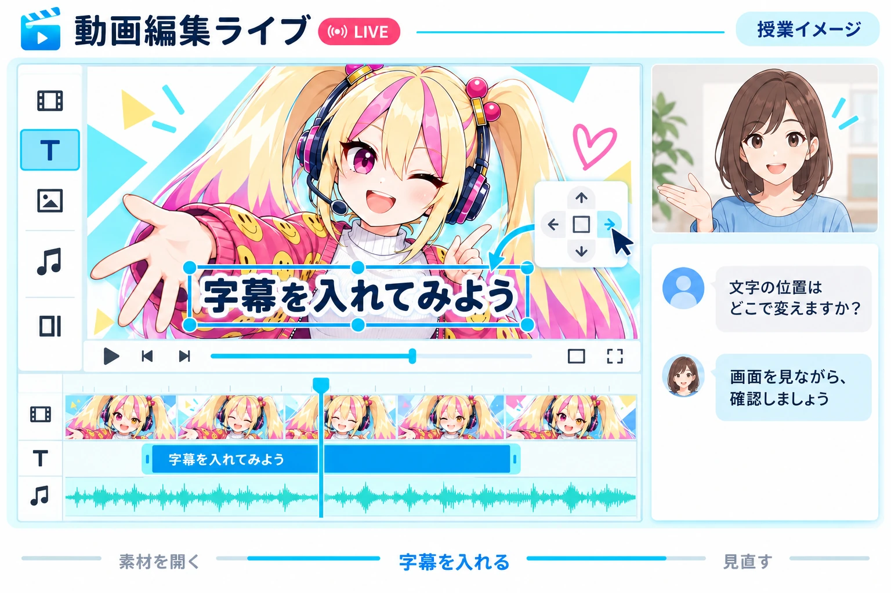
授業イメージ / 講師・教材画面は説明用に生成したものです
専門的な操作は教材と講師の実演で。職員の方がすべてを教える前提にせず、日々の声かけや活動ペースの確認に目を向けられます。
基礎教材の更新に加え、案件ごとの取り組み方を解説する動画を用意。新しい案件で学びを広げ、過去案件を使った模擬訓練にも繰り返し取り組めます。
02エスピクトAI「ぴくと」
操作で迷ったら、その場でAIに質問。職員の方に聞く以外にも、自分で手順を確かめながら進める選択肢を用意しています。
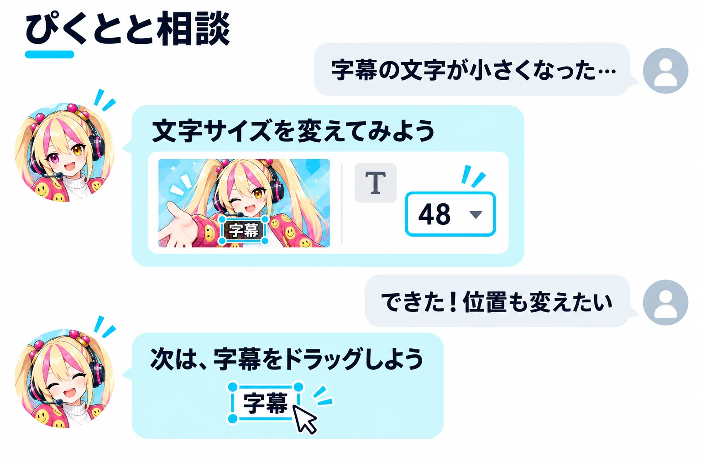
AIとの相談イメージ / 画像回答の表現案。現在の回答画面とは異なります
回答は内容を確かめて活用。体調や福祉支援の相談は事業所へ。
03出席・取り組みの記録
誰が、いつ、何に取り組んだか。出席・学習時間・課題の提出を、専用アプリでまとめて確認できます。
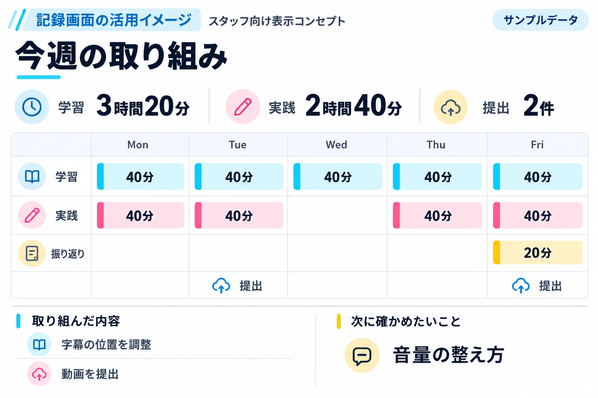
記録の活用イメージ / サンプルデータ / 事業所向け表示の構想。現在の実装画面ではありません
利用者の方は自分の取り組みを振り返り、職員の方は一人ひとりの活動を把握。通所・在宅での取り組みを、記録から確かめられます。
記録は日々の振り返りの材料です。福祉サービスとしての支援・記録は事業所で行います。
分からない所はアプリで質問できるので、付きっきりでなくても進められる
SUBMIT納品までの流れ
分からない所は、アプリのチャットで質問できます。
提出した成果物はエスピクトのスタッフがチェックし、OKになった案件は納品します。
分からない所は、アプリのチャットで質問できます。
できた成果物を、アプリから提出します。
エスピクトのスタッフが見て、直す所があれば伝えます。直して出し直せます。
OKになった案件は、そのまま納品します。
課題ごとのチャットの見本。利用者さんが写真の入れ場所を質問し、ぴくとが答えます。利用者さんが成果物を提出すると、エスピクトのスタッフが直す所（写真の下に説明を足す）を伝えます。直して出し直すとOKになり、納品されます。文はイメージです。
今月の取り組み
OKになったら
いつ、何に取り組み、何を出し、誰が確かめたか。日々の取り組みを、あとから確かめられる形で残します。
記録は日々の振り返りの材料です。福祉サービスとしての支援・記録は事業所で行います。
見せられる記録
行政の指導や監査のときも、ご家族に説明するときも、日々の取り組みをそのまま見せられます。きちんと取り組んでいる事業所であることが、記録から伝わります。
今から
11月中旬から
国の検討でも、同じ方向の話が出ています。在宅での支援について、訓練や支援の様子を動画・画像で保存し、求めに応じて出せることを必須にする案があります（今は努力義務）。在宅での生産活動の中身（動画作成・ホームページ作成など）の見直しも、論点になっています（厚生労働省の検討チームの資料、2026年9月28日）。
案の段階で、まだ決まったものではありません（2026年10月時点）。
04WORKS取り組める仕事
利用者の方の興味に合わせて、できる作業から。制作・発信・運営を支える仕事があります。
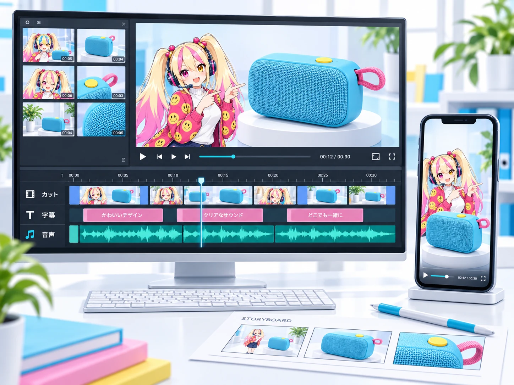
YouTube動画、企業・商品の紹介動画、ショート動画。素材をつなぎ、音や文字を整えて、伝わる一本に仕上げます。
はじめの一歩不要な場面のカットや、字幕の入力から。
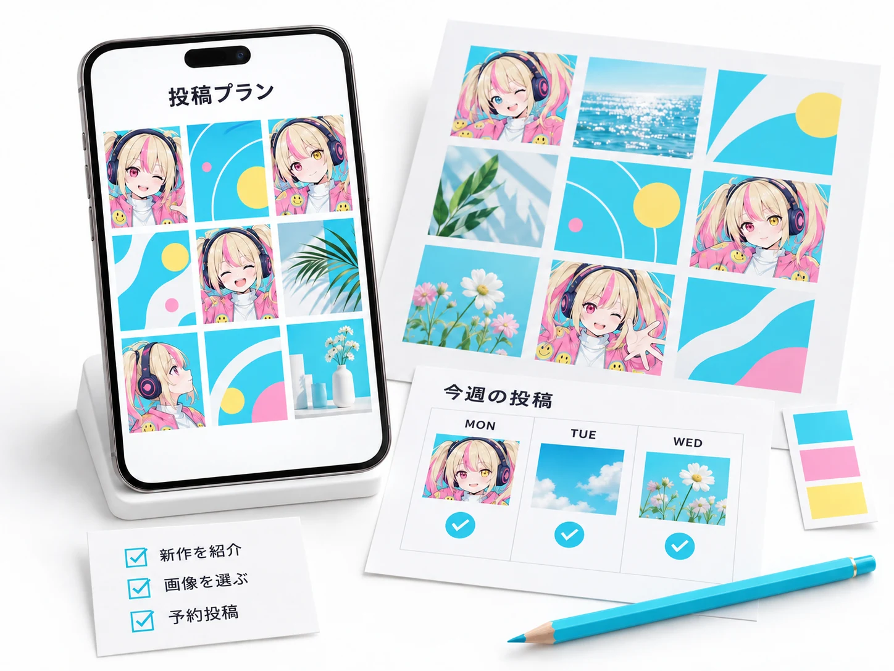
お店や企業の発信を、企画から投稿まで。画像・文章・投稿スケジュールを整え、継続した発信を支えます。
はじめの一歩投稿画像の文字替えや、文章の下書きから。
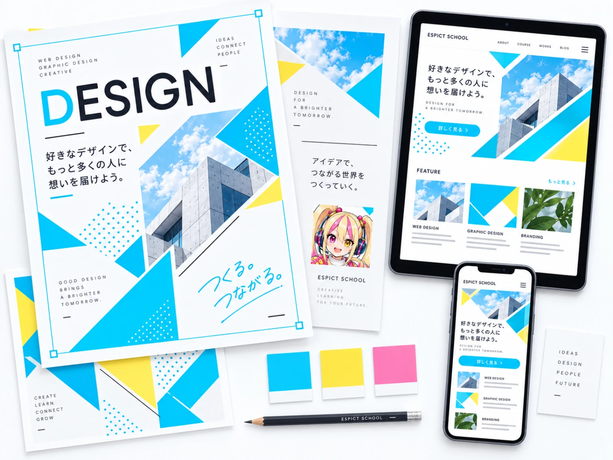
ロゴやサムネイルから、チラシ、Webページまで。文字・写真・色を組み合わせ、お店や企業の魅力を見える形にします。
はじめの一歩テンプレートの文字や写真の差し替えから。
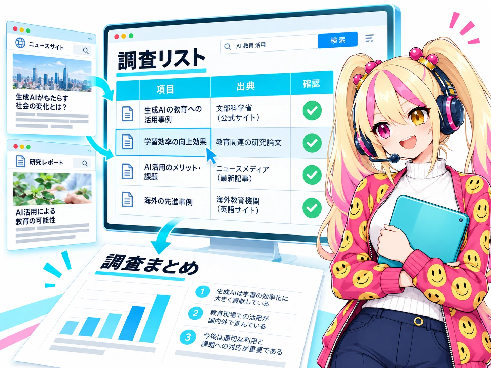
調べた情報やAIの下書きを、確認して使える形に。企業・商品のリサーチ、比較表、文章やデータの整理に取り組みます。
はじめの一歩指定された情報を調べ、リストにまとめることから。
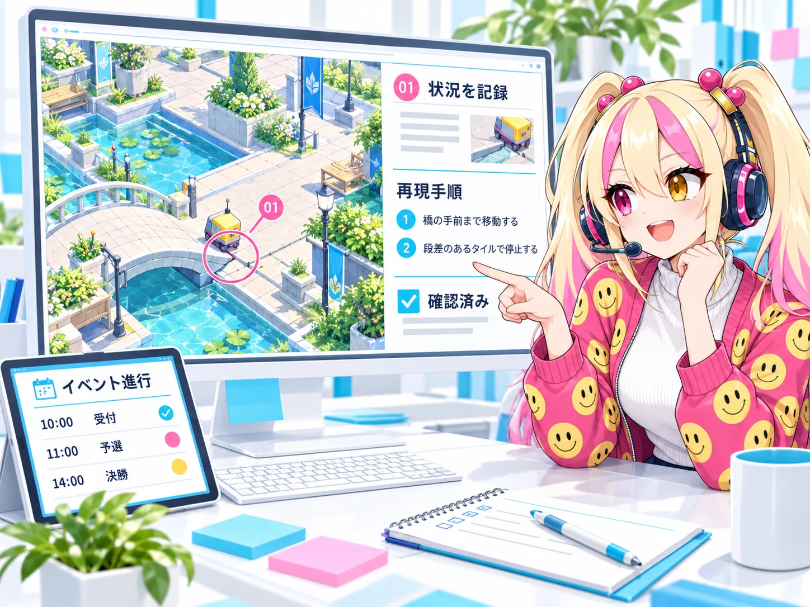
ゲームを動かして不具合を確かめ、再現手順を報告。大会の準備や進行にも関わり、体験を裏側から支えます。
はじめの一歩決められた手順で動作を確かめ、結果を記録することから。
キャラクターやアイコンのイラスト、配信画面に使う素材、2Dキャラクターの制作補助。描くことも、配信を裏側から支えることも、取り組みにつながります。
はじめの一歩線画の色塗りや、素材の切り出しから。
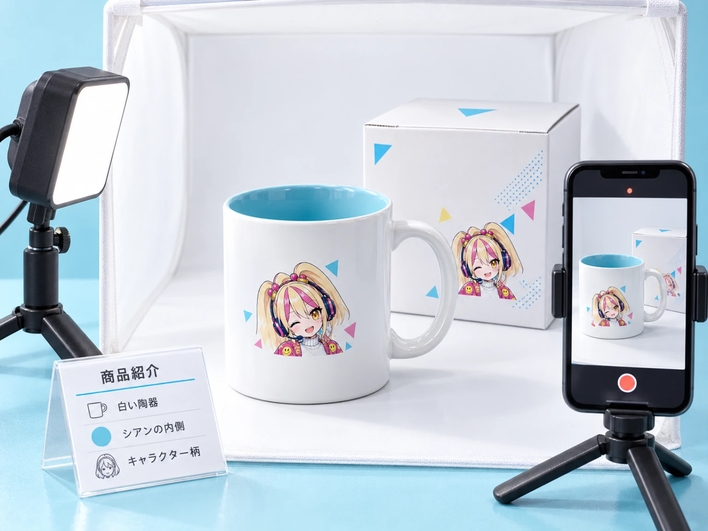
商品を撮り、魅力を伝え、購入のきっかけをつくる。写真や紹介動画から、ライブ配信の台本・進行の補助まで、販売を支える制作に取り組みます。
はじめの一歩商品情報の整理や、写真の明るさ調整から。
興味に合わせて、
はじめの一歩から。
画像は仕事内容を伝えるための制作イメージです。登場する商品・イベントは架空の題材で、実績や販売品ではありません。案件の内容・募集状況・参加条件は個別にご案内します。
自分が作ったものが、本当に使われてうれしい
見学に来た人に「こんな仕事ができます」と見せられる
GALLERY作品の壁
利用者の方が作り、依頼主に届けた作品を並べる場所です。いまは制作イメージを並べています。
次にやることが分かるから、迷わない
05ROLES取り組み方の例 / 配信告知の制作
全員が同じ作業をする必要はありません。興味や経験、取り組みやすい内容から、担当する作業を考えます。
説明用のモデルケース。実在の利用者・受注実績ではありません。
A配信メモ
B告知画像と投稿文
【配信のお知らせ】○月○日（○）20:00から、イラストメイキング配信をします。ぜひ見に来てください！
Cチェックリスト
役割を選ぶと、
ここに取り組みが反映されます。
役割を選んでください。
自分の取り組みが、誰かの発信を支える
学ぶだけでなく、実際に使われるものに関わる経験へ。担当できる範囲は、本人の状況と案件の条件に合わせて確認します。
案件を探さなくてよくなった
06SCHEME事業所と企業を、学びと仕事でつなぐ
日々の支援を担う事業所と、仕事を依頼する企業。
その間を、エスピクトスクールがつなぎます。
比較用図のデザイン案を切り替え
日々の支援と作業
事業所が活動を支え、利用者の方が担当作業に取り組む
学ぶ環境と仕事の提供
実案件の斡旋・提供から、品質確認・納品まで
仕事の依頼と条件の共有
目的や納品条件を共有し、案件に応じて確認
日々の支援と作業
学ぶ環境と仕事の提供
仕事の依頼と条件の共有
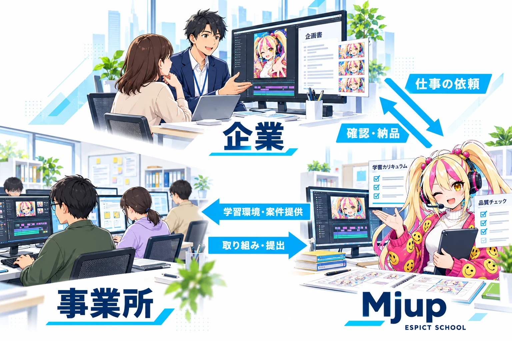
図中の「Mjup」は、エスピクトスクールの運営会社です。
企業からエスピクトスクールへ仕事を依頼。エスピクトスクールから事業所へ学ぶ環境と案件を提供し、事業所から取り組みを提出。確認・納品を経て企業へ届けます。
仕事と支援の関係を表したイメージ図です。契約・支払いの経路を示すものではありません。
斡旋・提供している案件の金額帯
5万〜60万円
案件の金額であり、利用者個人の工賃やサービス利用料金ではありません。発注条件は個別にご案内し、一定の仕事量や収益を保証するものではありません。
指示書がそろっているので、説明が楽になった
07FLOW実案件の進め方
案件の案内から品質確認・納品まで、エスピクトが支えます。
エスピクトが案内
利用者が取り組む
エスピクト・企業側で確認
エスピクトが納品管理
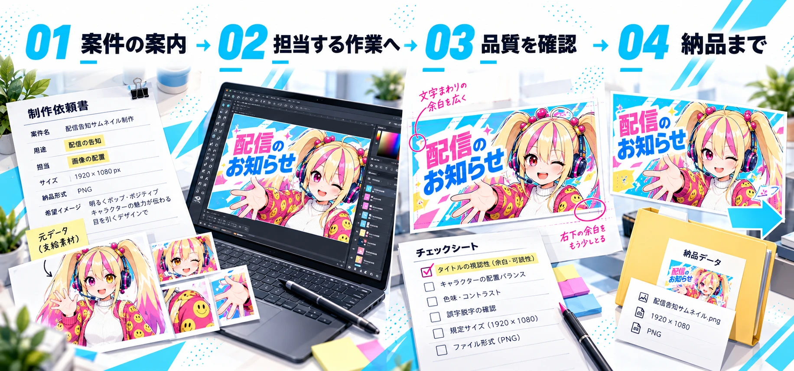
受注は、条件を確認してから
担当範囲・納期・報酬・変更時の連絡方法を、事業所と確認します。
案件の内容・報酬・参加条件は個別に確認します。一定の仕事量や収益を保証するものではありません。
ITに詳しい職員がいなくても、安心して始められた
08START導入までの流れ
利用者の方に合うか、日々の活動に取り入れられるか。
実際の使い方と条件を確認してから、導入を検討できます。
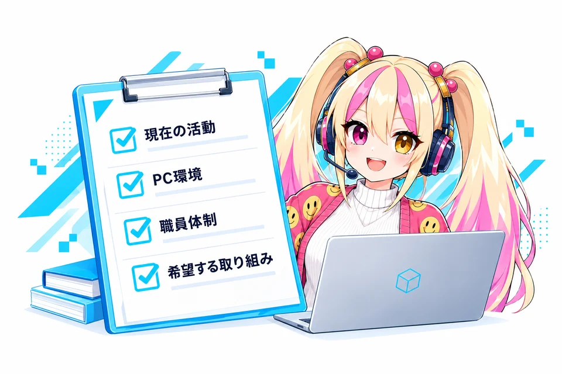
STAGE 01
今の活動と、ご希望を共有
利用者の方の興味、現在の活動、PC環境や職員体制を伺います。まだ分野が決まっていなくても、ご相談いただけます。
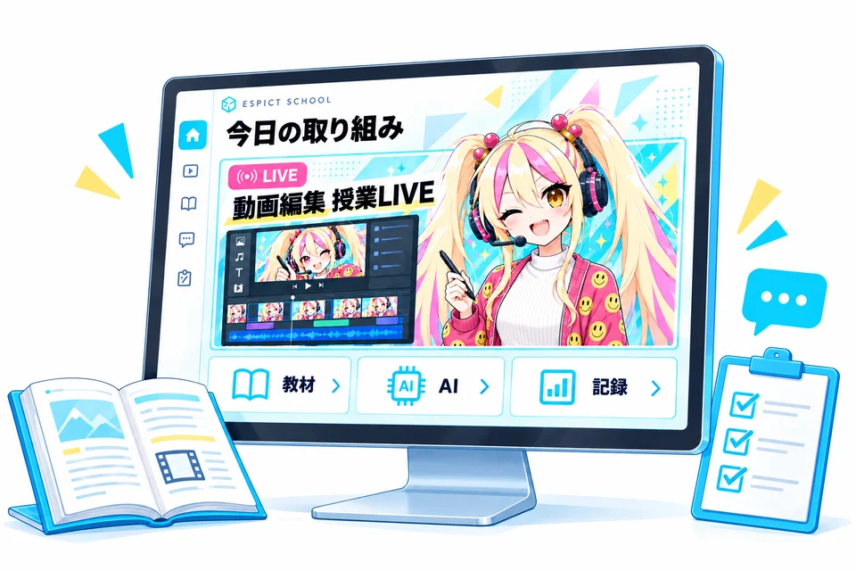
STAGE 02
教材・AI・記録を実際に体験
教材・AIに加え、出席や取り組みの記録・確認まで体験。利用者の方がどう進め、職員の方がどう関わるかを確かめ、ライブ授業への参加方法もご案内します。
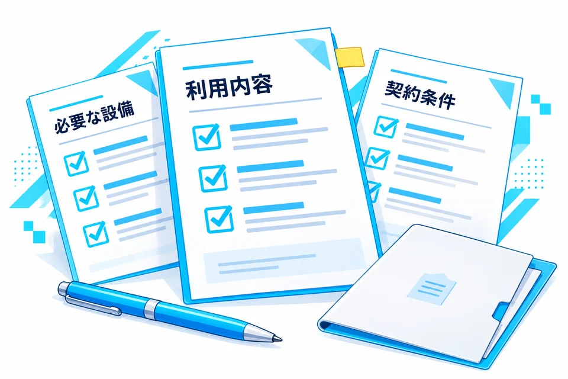
STAGE 03
利用内容と条件を確認
利用条件・費用・必要な設備をご案内します。事業所の活動や体制に合うか、導入前に一緒に確認します。
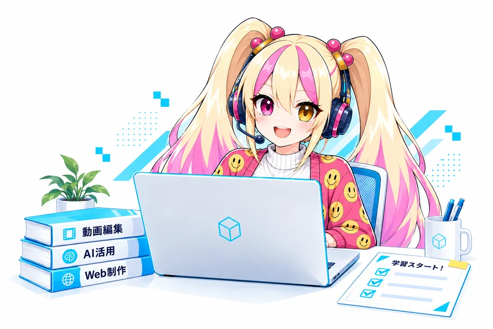
STAGE 04
PCの準備から、利用開始まで
今あるPC・ソフト・通信環境を確認し、必要に応じてPCのレンタル・販売もご相談いただけます。アカウントと初期操作を確かめ、日々の活動へ。
Mjupの公式お問い合わせ窓口へ進みます
09Q&Aよくあるご質問
学び方、設備、実案件について。事業所での利用を考えるときの疑問にお答えします。
職員の方だけで、専門的な指導を抱える必要はありません。
教材に加え、毎日のライブ授業・質問対応とアーカイブを活用できます。操作や課題の疑問は24時間使えるエスピクトAIでも確認できます。日々の声かけ、体調や活動ペースの確認は事業所にお願いします。
基礎教材から、取り組みやすい内容を選べます。
全員が同じ作業をする前提ではありません。興味や経験に合わせて学び、実案件では必要なスキルと担当できる範囲を案件ごとに確認します。
取り組む分野に合わせて、今のPC環境から確認します。
動画編集・デザイン・調査など、内容によって必要な環境は異なります。現在の設備を伺い、必要なソフトや通信環境をご案内します。PCのレンタル・販売もご相談いただけます。
在宅での学習やデジタルの作業にも活用できます。
教材・ライブ配信・AIを、事業所の支援と組み合わせて利用します。在宅利用の可否は自治体の判断や事業所の支援体制によります。福祉サービスとしての支援がアプリだけで完結するものではありません。
変更が分かった時点で、案件の担当窓口へ共有します。
受注前に作業量・分担・確認日・連絡先を整理し、変更時の対応を相談します。代行や納期延長の可否は案件によって異なります。
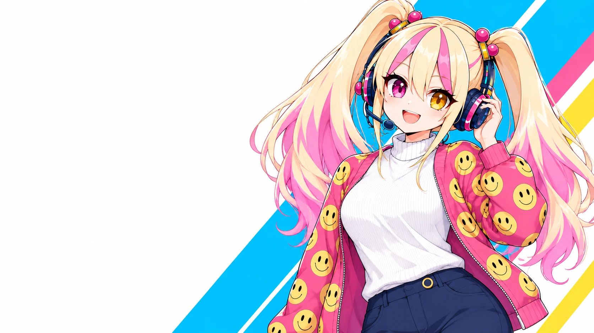
FOR YOUR TOWN地域に、新しい選択肢を。
「ここで学びたい」
そう思える場所を、この地域に。
教えてくれる人と、挑戦できる環境を。
事業所の新しい魅力を、一緒につくります。